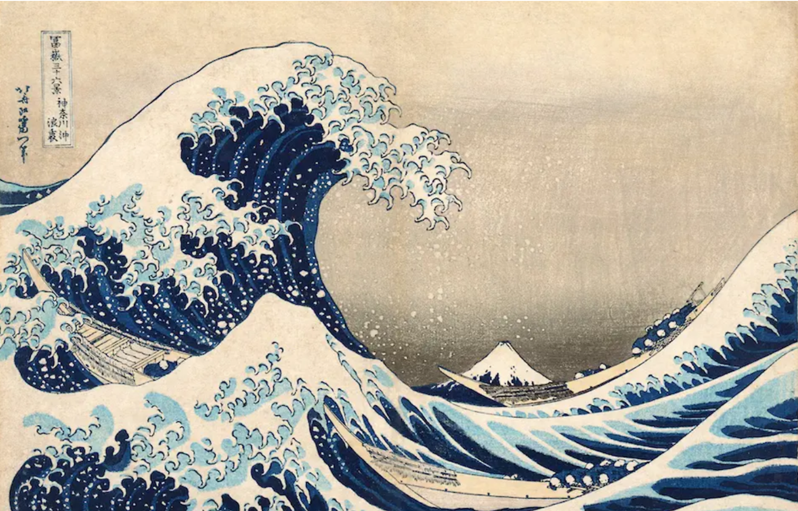

네덜란드 상인에게만 데지마에서의 교역 허가 → 서양의 의학, 천문학, 조선술 등 학문 유입(난학)
➋ 신패를 발급받은 청 상인에게 나가사키에서의 교역 허가
🌾학습지 59쪽 — 2. 에도 막부의 발전 · (3) 18세기 대기근
◆
2. 에도 막부의 발전
🌾 (3) 18세기 대기근의 발생
기후 변동, 화산 폭발 등으로 발생
각지에서 농민들의 봉기 발생, 에도 막부에 대한 불만 고조
🎭학습지 60쪽 — 3. 에도 막부의 문화 · (1) 조닌 문화
◆
3. 에도 막부의 문화
🎭 (1) 조닌 문화
① 다이묘의 성곽을 중심으로 ➌ 조카마치 발달 → 조닌의 경제력 성장
② 가부키, 우키요에, 아리타 도자기 등이 유행
🎨에도 시대의 풍속화 — 우키요에

📚학습지 60쪽 — 3. 에도 막부의 문화 · (2) 사상
◆
3. 에도 막부의 문화
📚 (2) 사상
① 조선을 통해 성리학이 소개되어 체제 유지, 의례 정비에 활용
② 국학 운동이 고조 → 존왕양이 운동에 영향
✏️학습지 60쪽 — 개념 확인 문제 · 1번
개념 확인 문제 1
빈칸에 들어갈 알맞은 말을 쓰시오.
⑴15세기 중엽 무로마치 막부 시기에 쇼군의 후계자 분쟁으로 ( 오닌의 난 )이 발생하였고, 이후 100여 년간 다이묘가 패권을 다투는 센고쿠 시대가 전개되었다.
⑵에도 시대에는 막부의 쇼군이 중앙과 지방의 직할지를 지배하고, 그 외 지역은 다이묘에게 번이라 불리는 영지를 하사하는 ( 막번 체제 )이/가 완성되었다.
⑶경제력을 갖춘 조닌은 가부키를 관람하고 풍속화인 ( 우키요에 )를 감상하는 등 조닌 문화를 발전시켰다.
✏️학습지 60쪽 — 개념 확인 문제 · 2번
개념 확인 문제 2
다음 내용이 옳으면 ○표, 틀리면 ×표 하시오.
⑴도요토미 히데요시는 전국적인 토지 조사를 실시하고 농민이 소지한 무기를 몰수하였다. ○
⑵에도 막부는 슈인장을 발급받은 청 상인에게도 나가사키에서의 교역을 허용하였다. ×
⑶18세기 후반에는 고전과 고대사 연구를 통해 고대 일본의 정신으로 돌아갈 것을 주장하는 국학 운동이 고조되었다. ○
✏️학습지 60쪽 — 개념 확인 문제 · 3번
개념 확인 문제 3
다음 단어에 대한 내용으로 옳은 것끼리 선으로 연결하시오.
⑴오다 노부나가 → 조총을 활용한 전법으로 통일 기반 마련
⑵도요토미 히데요시 → 센고쿠 시대 통일, 조선 침략
⑶도쿠가와 이에야스 → 세키가하라 전투 승리, 에도 막부 개창
✏️학습지 60쪽 — 개념 확인 문제 · 4번
개념 확인 문제 4
밑줄 친 '이 제도'의 명칭을 쓰시오.
에도 시대에는 다이묘를 강력하게 통제하기 위한 목적으로 이 제도를 실시하였으며, 이 제도에 따라 다이묘는 에도와 자신의 번에 교대로 거주하게 되었다. 에도와 번을 오가는 다이묘는 수백 명에 달하는 행렬 규모를 운영함에 따라 막대한 재정을 지출해야 했다. 한편 다이묘들의 왕래 과정에서 에도와 각 지방을 연결하는 5가도가 발달하였다.